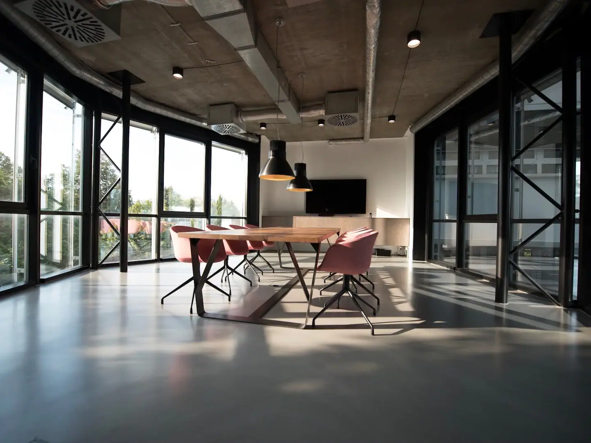
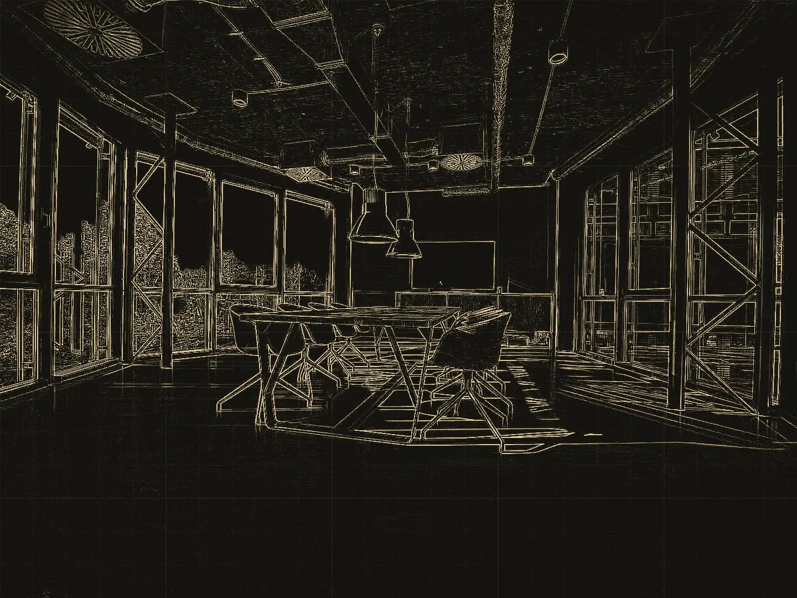
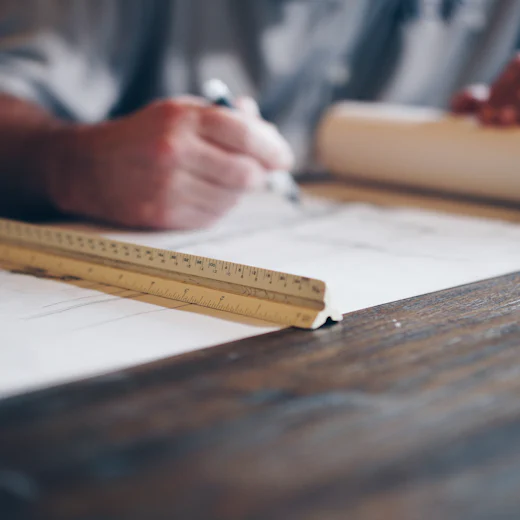
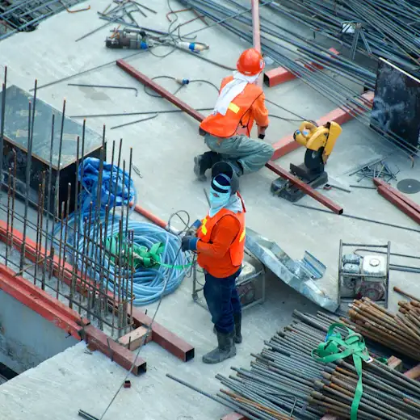
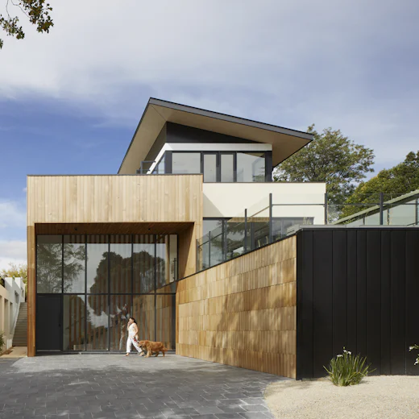

Sócia de Projetos
Helena
Arquiteta. Desenha cada casa a partir da rotina de quem vai morar e visita a obra toda semana, para o construído sair igual ao aprovado.
Arquitetura · Obra · Interiores Belo Horizonte
Você aprova o projeto e acompanha de perto. A obra inteira fica com a gente.
01 Projeto
Arquitetura e interiores desenhados para o seu terreno, a sua rotina e o seu orçamento. Primeiro a gente escuta, depois risca.
02 Engenharia
Estrutura, elétrica e hidráulica projetadas por quem desenhou a casa. Nada se perde entre a prancha e o canteiro.
03 Obra
Mão de obra nossa, material comprado por nós e cronograma que você acompanha toda semana. Um contrato, um responsável.
04 Interiores
Móveis sob medida, iluminação e acabamento resolvidos no mesmo projeto. Você entra com a mudança, o resto já está pronto.
Tudo em um só contrato
Casa boa não é a que sai bonita na foto. É a que funciona na segunda de manhã e ainda emociona no domingo.
Por isso projeto e obra moram no mesmo escritório. Quem desenha sobe no andaime, quem constrói participa do projeto, e você fala com as mesmas pessoas do começo ao fim.
Você não precisa coordenar arquiteto, engenheiro, empreiteiro e marceneiro. A Cumeeira assina o projeto, executa a obra e entrega os interiores.
Projeto completo, do estudo de implantação ao detalhe da marcenaria.
Estrutural, elétrico e hidrossanitário compatibilizados com a arquitetura.
Execução com equipe própria, do alicerce à pintura.
Cronograma, compras e custos em relatório semanal.
Móveis desenhados junto com o projeto e produzidos por parceiros fixos.
Avaliação técnica antes de comprar um imóvel ou começar uma reforma.
Obra 01 Construção completa
Um terreno com uma árvore de quarenta anos bem no meio. A família queria a casa e queria a árvore. O projeto ficou com as duas.
A árvore ocupava o centro do lote. Em vez de tirar, desenhamos a casa em L em volta dela, e o pátio virou o coração do projeto.
Sala, cozinha e varanda abrem para o pátio com portas de correr de piso a teto. Os quartos ficam no volume de cima, virados para a copa.
Fundação afastada das raízes, estrutura metálica e fechamento em madeira e chapa escura. Onze meses de canteiro, com relatório toda sexta.
Marcenaria em carvalho, bancadas em pedra clara e iluminação embutida, tudo desenhado junto com a arquitetura.
Do laudo do terreno à última luminária, a mesma equipe.
Quero uma obra assimObra 02 Projeto e reforma comercial
Um escritório de engenharia precisava trocar de endereço sem parar de trabalhar. Projetamos e reformamos o andar novo, de 320 m², em seis semanas, com a equipe deles ainda no prédio antigo.
Forro aparente, piso contínuo e divisórias de vidro: tudo decidido no projeto, nada resolvido no susto. Mudaram numa sexta e abriram na segunda.


Arraste para comparar o desenho do projeto com a foto da entrega.
Obra 03 Construção
Toda obra nossa passa por três tempos: a prancha, o canteiro e a entrega. Nesta, foram quatorze meses entre o primeiro e o último.

Na prancha
No canteiro
EntregueUma amostra do que sai daqui: casas, apartamentos e espaços comerciais. Parte ainda está em projeto, parte já foi entregue.
Projeto 3D é imagem do projeto. Obra entregue é foto do que foi construído.
A Cumeeira existe para acabar com o jogo de empurra entre projeto e obra.
Helena, Rafael e Lúcia trabalharam anos em lados diferentes do canteiro e viram o mesmo problema se repetir: o cliente no meio, tentando fazer três empresas conversarem. Em 2016 juntaram tudo em um escritório só.
Sócia de Projetos
Arquiteta. Desenha cada casa a partir da rotina de quem vai morar e visita a obra toda semana, para o construído sair igual ao aprovado.
Sócio de Obras
Engenheiro civil. Responde por estrutura, instalações e canteiro. É quem assina o cronograma e quem liga quando alguma coisa precisa mudar.
Sócia de Gestão
Cuida de contrato, compras e orçamento. Manda o relatório de sexta e não deixa custo aparecer de surpresa.
Projeto e obra no mesmo endereço, para a sua casa sair como foi desenhada.
Obra entregue duas semanas antes do combinado. Eu nem sabia que isso existia.
O relatório de sexta virou meu momento favorito da semana. Sempre soube quanto tinha gasto e o que vinha depois.
Reformamos o apartamento morando em outra cidade. Acompanhei tudo pelo celular e só voltei para pegar a chave.
Já tinha feito obra com arquiteto de um lado e empreiteiro do outro. Nunca mais. Aqui ninguém empurra problema para ninguém.
A marcenaria chegou e encaixou de primeira. Parece detalhe, mas quem já fez obra sabe o que isso significa.
Quiseram ver como a gente vivia antes de desenhar qualquer coisa. A casa ficou com a nossa cara, não com cara de revista.
Demonstração · depoimentos de exemplo
Conte o que você tem em mente, mesmo que ainda seja só uma ideia. A primeira conversa é sem compromisso e você já sai com um caminho.
Antes do primeiro traço, a gente escuta.